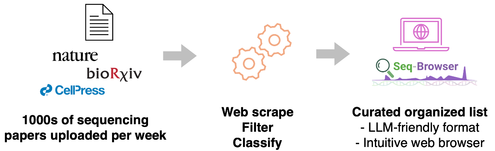

Why
New sequencing assays appear every week, across single-cell, spatial and temporal genomics. Seq-Browser was designed to keep one curated, searchable list of them, easily readable by people and by language models.
How it works
- Collect. Every new bioRxiv/medRxiv preprint and every new PubMed journal paper, via their public APIs, with full text where it is open access.
- Filter. Free rule-based triage cuts ~1,200 papers a week to ~100 candidates. It reads abstracts and scans full text for naming phrases (“an approach we call …”), which catches methods introduced only in the Results.
- Classify. A language model reads each candidate and decides whether it introduces a new sequencing method, wet-lab or computational, and tags it, quoting the sentence that justifies each call.
- Publish. The list rebuilds this website, a Markdown table and JSON/CSV downloads automatically.
Labels
- Readout
- What is measured: 3D genome, RNA, chromatin accessibility, histone modifications, DNA methylation…
- Resolution
- Bulk, single-cell, spatial or subcellular.
- Temporal
- How a method captures time: metabolic labelling (new vs old RNA), repeated sampling of the same living cells, or molecular recording.
- Scope
- Genomic coverage: genome-wide, or targeted to chosen loci (capture, viewpoints). Selecting a place in a tissue is resolution, not scope.
- Chemistry
- Key molecular steps: proximity ligation, MNase, Tn5, antibody-tethered enzymes, droplets…
- Variant of
- A direct modification of a parent method, e.g. RCMC → Micro-C.
- Builds on
- Combines or draws on other methods, e.g. SHARE-seq builds on scRNA-seq and scATAC-seq.
Computational methods are being collected and will appear once curated.
Using it with an LLM
Point your assistant at the Markdown masterlist, which is the whole database in one file, or at llms.txt. It won't need to search the web.
Missing a method?
Use the Submit page. Submissions are prioritized in the weekly collection and classification.